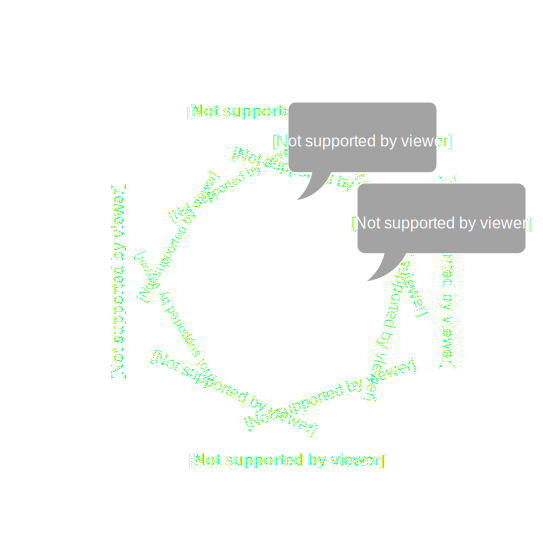
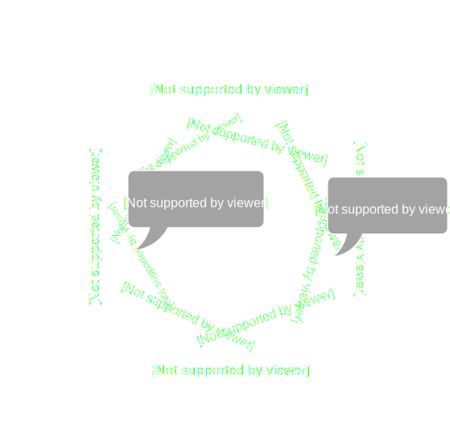

Tom Davis
Senior Software Engineer
@photomoose
tom.davis@rumr.co.uk
A change to implementation details breaks the tests.
Fixing broken tests is time consuming.
Confidence in the tests is lost.
Less inclined to clean the code.
This robs us of productivity...
...becomes expensive to maintain...
...and gives us a false sense of confidence.
What is the test telling us?
Is the test broken because the behaviour has changed?
Or is the implementation wrong?
Where is the behaviour expressed?
We're writing tests against classes and methods.
We're coupling our tests to our implementation details.
A unit test should test a unit of behaviour...
...NOT a unit of implementation (e.g. class/method).
A change in behaviour triggers the writing of a new test...
...NOT the creation of a new class or method.
“What behaviour will we need to produce the revised report?
Put another way, what set of tests, when passed, will demonstrate the presence of code we are confident will compute the report correctly?
We need to be able to add amounts in two different currencies and convert the result given a set of exchange rates.
We need to be able to multiply an amount.”
Unit tests should run in isolation from other tests...
...it is not the thing being tested that should be isolated.
TDD unit tests should target a use case or scenario...
...NOT individual classes or methods.
Unit tests should drive the development of new behaviour...
...their purpose is to indicate when the implementation fulfils the required behaviour.
They should not restrict you from refactoring the implementation.
Write a failing test which expresses the desired behaviour.
There are no tests for tests; a failing test proves the test works.
Prevents false positives when there is a failure condition.
Write quick and dirty implementation code to pass the test.
Do not think about good engineering practices, such as design patterns, SOLID or clean code.
Remove code duplication and code smells.
Refactor code to produce clean code, introduce design patterns, SOLID principles, etc.
Perform good engineering at this point.
Do NOT write new tests!
Tests should target the public API, NOT the internal classes.
Use access modifiers to mark non API classes as internal.
This will give us a smaller surface area, resulting in less, but more descriptive tests that express behaviour and intent.
[assembly:InternalsVisibleTo("TightlyCoupledTests")]
Sometimes it gets tricky...
...we might want to write tests to guide our internal classes to the solution.
This is OK...
...but consider deleting them once we go green.
“Never delete a test if it reduces your confidence in the behaviour of the system.”
“Allow an application to equally be driven by users, programs, automated test or batch scripts, and to be developed and tested in isolation from its eventual runtime devices and databases.”



Do not mock internal collaborators.
Mock objects outside of the application boundary.
These typically produce non-deterministic results...
...return states that are difficult to reproduce...
...or are slow to execute (e.g. database)
Mock ports that are covered by other tests.
Mocks couple tests to implementation details.
Their use can make tests hard to read.
When implementation details change, the mocked behaviour needs to change.
[Test]
public void When_Build_Is_Called_Behaviour_Is_Correct()
{
_viewModelBuilder.Build(_keysToImport);
_mockFactory.Verify(x => x.Importers(_keysToImport), Times.Once());
_contentService
.Verify(x=>x.GetHtmlContent(_importer.Object.Key), Times.Once());
_parser.Verify(x => x.Parse(null), Times.Once());
_importer.Verify(x=> x.Import(_legacyContent), Times.Once());
_logger
.Verify(x => x.Info("Import of legacy html content: " + MiniBagKey + " successful"), Times.Once());
}
“Over-use of mock objects as part of a suite of unit tests can result in a dramatic increase in the amount of maintenance that needs to be performed on the tests themselves during system evolution as refactoring takes place.”
“If the behavior is not modelled correctly then the unit tests may register a pass even though a failure would occur at run time under the same conditions that the unit test is exercising, thus rendering the unit test inaccurate.”
Test a new behaviour, not a new class or method.
Write dirty code to pass the test, then refactor.
Do not write tests for extracted classes/methods.
Develop and accept against tests written on a port.
Integration tests confirm hookup of ports to adapters.
System tests provide end-to-end confidence.
Do not mock internals, privates or adapters.